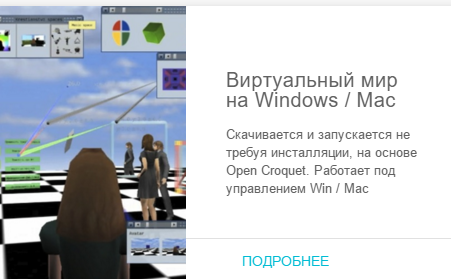
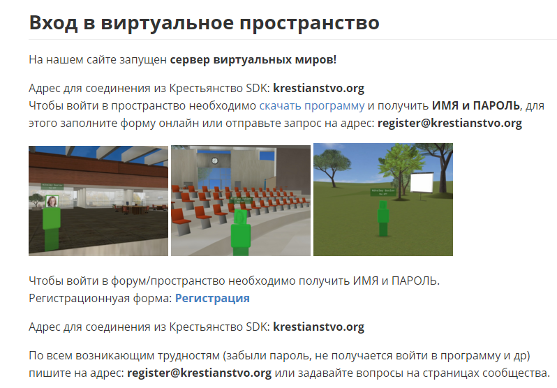
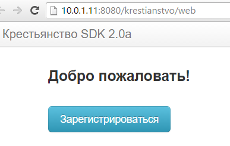
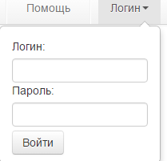
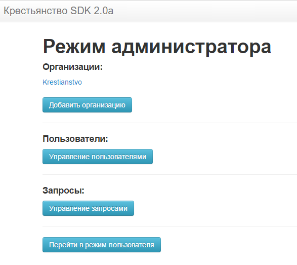
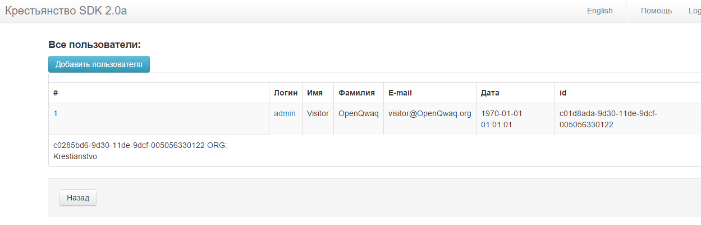
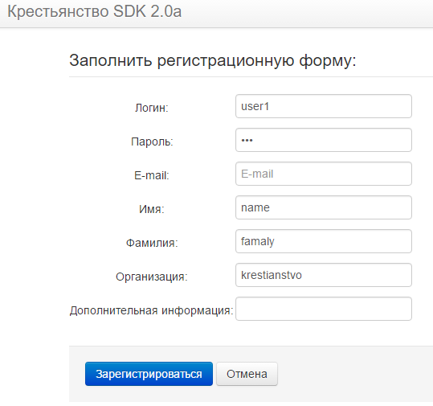

Регистрация участников виртуального обучающего пространства.
Чтобы зарегистрировать учеников в качестве участников виртуального пространства «Крестьянство» нужно выполнить следующие шаги:
Зайти на сайт https://www.krestianstvo.org/
Выбрать Виртуальный мир (Подробнее)

- Выбрать из оглавления Виртуальное пространство

Нажмите Регистрация
В адресной строке наберите IP адрес сервера вместо www.krestianstvo.org:

- Введите логин admina:

- Вы вошли в режим администратора организации. Выберите Управление пользователями

- Появится список пользователей

- Выберите Добавить пользователя и заполните регистрационную форму.

Завершите кнопкой Зарегистрироваться 10. Будет сообщение Пароль успешно создан. Нажмите ОК и вы увидите пополнившийся список участников организации.